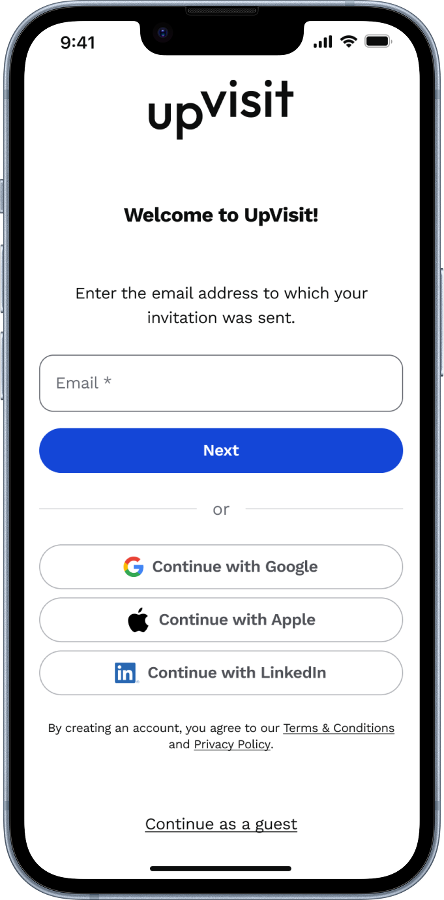

Designing a Business Matchmaking Tool for Event Attendees
Helping people meet the right people faster

Overview
Research & Problem Definition
Imagine arriving at a busy trade fair with hundreds of people to meet – and no idea where to start. That was the reality for many attendees: too little time, too many possible connections, and no clear way to prioritise (user problem). This often led to missed opportunities, frustration, and lower perceived value of the event. Organisers, meanwhile, wanted to keep visitors engaged and deliver measurable ROI for exhibitors and sponsors (business problem).
From user persona insights provided by another team, we identified these pain points:
Attendees wasted time trying to find relevant people, sessions, or exhibitors.
Event apps often felt clunky or unreliable, leading to low adoption.
Overwhelming choice made it difficult to focus on high-value opportunities.
Missed connections reduced the overall perceived value of attending.
Our target users were B2B event attendees including speakers, sponsors, and exhibitors who needed to make strategic connections efficiently.
So, we asked ourselves:
Competitive Analysis & Project Constraints
We analysed existing solutions in the market to understand the landscape and identify opportunities for differentiation. Most competitors had spent years developing sophisticated real-time communication features—something we couldn't replicate within our tight timeline so we had to focus on creating immediate value. Besides, the feature had to be designed, tested, and launched in just a couple of months – without a lead designer or PM.
Despite these, we aimed to deliver a usable, privacy-conscious feature that could launch in time for a real event.
Ideation & Early Concepts
Breaking Down the Challenge
I started with outlining the complete user journey for matchmaking within the UpVisit app, combining the findings from the user research and the project requirements.

And together with the team, we broke down the matchmaking feature into digestible technical components:
- Account & Profile Creation - Getting users set up
- Attendee Discovery - A curated list of relevant connections
- Meeting Requests - Facilitating introductions
- Post-Event Follow-up - Maintaining connections beyond the event

To break it down further, I created a user flow specifically for the profile setup process, since up until that point, our app didn’t require user registration. My goal was to understand all possible paths for new users while also taking into account the needs of existing users. A particular challenge was ensuring the feature was mandatory and easily discoverable for events with matchmaking capabilities, whilst remaining invisible for other event types.

Initial sketches helped visualise the core matchmaking flow:

Design & Prototyping
While the initial plan divided the matchmaking feature into four main parts — Account & Profile Creation, Attendee Discovery, Meeting Requests, and Post-Event Follow-up — I identified several gaps and opportunities for improvement once I began designing the user flows.
First, I noticed that the existing onboarding flow could be improved.
Second, I realised that account creation and profile setup were too complex as a single step and worked better when separated. Post-event follow-up had to be postponed to Matchmaking V2 due to time constraints.
The resulting five-stage flow better reflects user needs and project feasibility:
- Onboarding
- Signup & Login
- Profile Setup
- Finding a Match
- Book a Meeting
1
Onboarding
2
Signup & Login
3
Profile Setup
4
Finding a Match
5
Book a Meeting
Expecting an influx of new users, I redesigned the existing onboarding screens. We wanted to highlight more value and replaced illustrations with human photos to create a more professional and business-focused first impression.

Before: Previous onboarding screens with generic illustrations


Early sketches exploring different onboarding approaches


After: Human photos that make the experience more relatable, trustworthy, and user-centred.
1
Onboarding
2
Signup & Login
3
Profile Setup
4
Finding a Match
5
Book a Meeting
Initially, I designed multiple signup options, including third-party platform integration, to make the signup and login process as convenient as possible:

Initial design with multiple signup options

However, due to technical constraints (matchmaking was only available for email-invited users, so in cases a user decides to sign up with another email, we would have had to have an extra verification step to verify the invitation), we streamlined to a single option:

Later: email-only signup flow
Final Solution: Email-only signup with one-time password verification for invited attendees.
1
Onboarding
2
Signup & Login
3
Profile Setup
4
Finding a Match
5
Book a Meeting
Next, I defined which profile information would be valuable for matchmaking algorithms while keeping the process simple and user-friendly.


Initial four-step profile creation process

Final three-step profile setup with LinkedIn integration
I removed the contact information page to remain compliant with user data regulations and discarded the final preview step, as the development team made the profile information saved in the background for user convenience. As a result, profile creation was simplified into three clear steps and also included an option to fill with LinkedIn.
- Profile images and basic information (with LinkedIn integration)
- Event goals
- Personalise & save

The LinkedIn integration was a game-changer—users could authenticate and automatically populate their profile photos and basic information, significantly reducing setup time.
Profile auto-fill with LinkedIn
1
Onboarding
2
Signup & Login
3
Profile Setup
4
Finding a Match
5
Book a Meeting
The core matchmaking experience meant seeing a customised list of attendees based on profile parameters:

To protect user privacy, I restricted access to the attendee list in certain scenarios, such as for unlogged users, users with incomplete profiles, or visitors from other matchmaking events who were not invited to the current event.

Another privacy measure was a view-limit restriction to prevent automated scraping, allowing users to view only 20 profiles per hour.

1
Onboarding
2
Signup & Login
3
Profile Setup
4
Finding a Match
5
Book a Meeting
The matchmaking feature allowed event attendees to send meeting requests to one another through the app, facilitating connections at the event. We developed our own structured meeting request system, and as a backup, users could also send an email or connect via LinkedIn. Additionally, we integrated an existing chat solution to make communication even more flexible.

Interactive Prototype
A short prototype showing how the matchmaking flow works.
Implementation & User Feedback
Since we didn't have time or budget for formal usability testing, we extensively tested the feature internally and launched it at a real event – Taxtival – to gather live feedback. Early reactions highlighted a few friction points:
- Some users disliked that profile completion could not be skipped.
- Others were unaware of the feature or missed their email invitation.
- The feature was not yet technically mature
Despite this, the feature performed much better during its second rollout at Start-up BW Summit (see the stats below).
Impact & Results
The matchmaking feature successfully enabled B2B event attendees to:
- Efficiently connect with relevant participants
- Schedule meetings in a structured manner
- Stay organised during complex events
- Maintain connections post-event
Whilst the first implementation had challenges, the rapid iteration and real-world feedback led to significant improvements in user engagement and satisfaction.
Next Steps
Based on feedback and the feature vision, our future plans included:
- Adding a flexible agenda view with scheduled meetings and sessions
- Introducing a swipe (Tinder-style) UI for quicker match exploration
- Providing post-event follow-up prompts to help nurture connections

Planned improvements for the matchmaking
Key Learnings
This project taught me several valuable lessons:
- Perfection isn't the goal on the first try - Creating a functional feature that addresses real user needs is already a significant achievement
- Real-world testing is invaluable - No amount of internal testing can replace actual user feedback in live environments
- Privacy by design matters - Building in privacy considerations from the start creates trust and prevents issues later